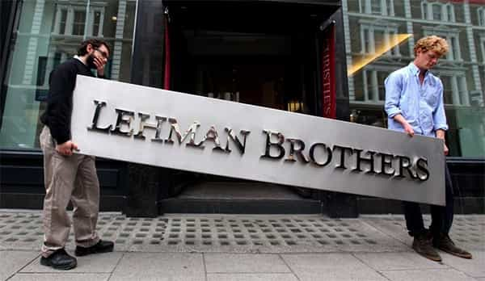

André is a young European who left his decaying country in 2012 for greener pastures. He enjoys exploring subterranean places, reading about a host of interconnected topics, and yearns for Tradition.


Being red-pilled and pushing on the world means that, sooner or later, libtards get mad and try to push us back. This happened to me, of course, and at least twice educated conformists tried to shut me up by appealing to “consensus.”
The first time was on Wikipedia. An article over a controversial historical fact mostly, if not only, relied on a single version of what supposedly happened, and the only historians quoted came from the left. I wanted to mention that one of these “experts” was an unrepentant Maoist—leftists never forget to mention that this or that guy was a member of a “far right” party even if this was decades ago, why don’t we have the same with them?—and add a reference to a politically incorrect albeit impeccably credentialed historian, Bernard Lugan. Two libtards opposed me, systematically reverting my improvements, and argued that their sheer number was “consensus” worth. Are two over one unanimous? Obviously not. Eventually, these two rounded up other leftists to pressure me and others into not editing the article.
The second time was here on ROK. A venturing leftist revealed himself through shrilling comments about how feminism and babbling star Michel Foucault are beyond legitimate criticism—because “consensus.” Of who? “Scholars” and “scientists.” Whom exactly, it is never said. The hypocrisy runs rampant here as SJWs have been hysterically anti-science about biology, but also claim that we should bow down to the latest invention from “humanities” and global warming departments, which are dens of well-paid narrative crafters pretending to do science. Facts tagged “from the right” are not acknowledged as facts, when “facts” created by leftists are shouted at dissenters as if certain.
The point is, those who pretend to embody unanimity appeal to something extrinsic to themselves to justify their ideological dictatorship and space seizure. They never admit how much they construct illusions of reality. Instead, they constantly refer to these illusions as something obvious or natural, which allows them to be never held responsible for their choices, their arguments, their attacks, or how much they “changed the world” for the worst.
Liberals are strong because they manage to wield a tremendous power while never being blameable for the consequences of their choices. White, masculine guilt is the other side of the “minority” and liberal pass. Even when faced with evidence that they are wrong, SJWs will always double down, shriek more, attack more, and put the blame on those not represented in the media-academia system and not blessed with mainstream hype. They are so accustomed into straining the others’ shoulders they are not even aware of their doing it. Here are some examples of how the really powerful escape their responsibilities.

“Sexual liberation” caused the rise of the hookup culture. Women being naturally hypergamous and now able to put men into a SMV hierarchy, men had to adapt to women’s preferences through learning game. Without manly solidarity, game merely increases intra-masculine competition and the women’s value. Divorce rates soared, women became party animals, let free rein to their attraction to antisocial types, and feminism ensured that their choices were beyond criticism no matter the consequences. 80% of divorces are initiated by women, many reconstructed families are hell on Earth as step-parents have no desire to care about children who are not theirs, and, guess what? Feminists have been on the forefront to whitewash divorces and reconstituted households.
As Tyler Durden said, “we’re a generation of men raised by women.” We have been too much influenced by our mothers, with many of us being exposed to the “strong womyn” and the “men who pick up are pigs” memes, have had no real father figure, and many friends among girls but only to realize later than being “friend” meant getting locked up in the friendzone and despised.
Feminism bears an embarrassing responsibility here. Millennials were born well after it took over the mainstream. Why such a partial, unsatisfying, potentialities-denying education? Why shaming guys who want to get laid, which is quite natural and healthy, while praising the “freedom” of girls to slut around? Because the Andrea Dworkins of this world willed it. And yet, when we get frustrated or unfit to their world, because of their education, they put the blame on us.
In Europe, a racaille (“trash”) culture of scorching the national language, exploiting the host country, attacking white autochthons (natives) in the streets, replacing the native population, promoting crime and gangsta rap… has grown out of large strips of immigrant populations, mostly North African and Sub-Saharan. This culture has been constantly apologized for by Leftists, because these “young” guys are victims of “racism”, y’know, promoted by mainstream music labels and MTV, and benefited from police impunity. Many suburban whites have been converting to the racaille style and sometimes to Islam instead of the other way around. Integration has been a failure: allochtons remained wilfully defiant and hostile. The American reader can easily draw the analogy with black ghettos.
As the car-burning, drug-dealing, normal people-beating racailles have been let off the hook by Leftists, white victims were constantly ignored or blamed. If a white person mentions having been harassed or assaulted by immigrant thugs, the typical libtard will answer something like “well you likely deserved it because otherwise you wouldn’t complain or it wouldn’t have happened.” Victim blaming, anyone?
Leftists constantly say immigrant hostility comes from a “social problem.” How exactly? Non-white suburbs in Europe have received a lavish attention from urban elves, billions in public money, and an unofficial toleration for drug trafficking. Many North Africans go seek their welfare check in luxurious cars. The real victims here are the outskirts-pushed whites who must live under the double domination of smug liberals occupying the institutions and racailles occupying the streets.
In truth, leftists bear a huge responsibility in the gangsta culture: they have told non-whites how “oppressed” they were and how they should hate Whitey instead of being good citizens. They have constantly suppressed incentives for good behaviour and made immigrant crime taboo. Had Leftists not created race wars and an excuse culture, non-whites would not stand out as a problem.
Liberals love to hate us. They have a very essentialist view of whom they call the “far right”, as if it was a kind of autonomous enduring species rather than a place where they dump pre-existing points of view once they don’t want them to be mainstream anymore. By doing so, they blind themselves to the obvious responsibility they have in our uprising. Their culture, their choices, their environment is depriving and frustrating—and it is primarily from them we have been seeking to free ourselves.
We appeared as dissenters primarily because we were denied or forced into playing inauthentic roles to subsist inside the system. Many millenials have to bear blue pilled baby-boomers parents who live inside a narrative and shrillingly refuse to step one foot aside from. We can’t speak about what really matters with such parents. Chronic joblessness, minoritist hostility, the toughness of the seduction market—or even the very existence of a seduction market—are topics we mostly debate amongst ourselves, because old Leftists keep cutting us off when we try explaining it to them. They cling to the 60s myths and legacy and deny, of course, all responsibility in the shortcomings of the world they hand us over, thus ignoring how their feminism, minoritism, pro-immigration stances caused and whitewashed what have been coming back at us.

As this piece explained well, “the [American] government pressured the financial industry to accept loans from people whose credit ratings made them bad risks.” Threated by accusations of “racism”, steered by State-engineered policies that wanted to democratize mortgages with someone else’s money (obviously), banks have been building a house of cards with commodified loans. The end result is well known, but the responsibilities behind have been carefully tamped down.
Indeed, blaming the banks amounts to telling only one half of the story. The other half, constantly unmentioned by the mainstream media, features Bill Clinton repelling the Glass-Steagal act, the Federal Reserve smearing and blackmailing (quote) banks into lending risky borrowers, Democrat senator Barney Frank denying in 2003 that Freddie Mae and Fanny Mac were undergoing a potential crisis, Democrat senator Chuck Schumer defending the financial status quo because “they have done a very good job” at housing people (who exactly?). In 2005, some Republicans who had listened to the warnings tried to regularize the house of cards: Democrats unanimously blocked the effort.
Claiming to desire an end to “racism” and operating on the premise of racial egalitarianism, [house activists] put into place the very policies that wrecked the global economy—and then took control of the narrative to shift the blame onto their victims (which included both the banks and the poor individuals who subsequently took out bad loans that the banks were forced by government policy to extend).
On February 2nd, a “French” black guy was apprehended by policemen after he tried to prevent them from apprehending another black who was an alleged dealer. Another criminal incident, with one particular feature: word spread that one policeman had rammed his police stick between the thug’s cheeks. Immediately, the French mainstream media stood up as one man for the “cause” of this alleged poor victim, forgetting presumption of innocence or even any investigation report. Théo, only designated by his first name, ignited a storm of leftist hysteria that lumped together the police, “racism”, and repeated the minority-victimhood narrative. “A black guy got raped by a white policeman!” Following the media trend, President Hollande visited Théo at the hospital—something he never did for any policeman or assaulted bystander.
Then, more information popped out, and the media quietly forgot the subject of their weeks-long hysteria. After investing the case, the general inspection of police forces reached the conclusion that no policeman raped the apprehended that day and that security cameras recordings corroborated the policemen’s version, who denied the whole rape story and had been conspicuously ignored by the media. It was also revealed that the apprehended’s family had diverted almost 700.000 euros through a publicly funded association, a case far from exceptional. Finally, the criminal-turned-victim retracted his testimony, and it seems that he got raped by another black drug dealer before he had been apprehended.
No mainstream media did apologize for having spread fake news fuelling anti-white, anti-police hysteria, and complacency for criminals. Instead, they passed to other topics as if nothing had happened, in a blatant display of shameless irresponsibility. The example is French, but once again, the analogy is easy to draw: American or international mainstream media have spread fake news about President Trump not shaking hands with Angela Merkel (he did shake hands), wrongly accused our own Matthew Forney of having shot Muslims in Montreal, and numerous other ones.
At best the fake news media tell half of the story while ignoring or normalizing the other half, and at worst they outright lie and smear. Leftists don’t care much about truth. What matters to them is having the upper hand over what can be said or not. How many times did I see Leftists go from “there is no correlation between immigration and crime” to “okay there is but… [pick your choice:] it is caused by the environment, it has been caused by white reycism, non-whites are poor and lack self-trust, the CIA gave guns to the initially non-violent Blood and Crisps gang” and so on?
Great power should go along with a great sense of responsibility. The left turns this principle on its head: the more power one has in their system, the less accountable he is, and the more those not in power—the average dispossessed, the middle class, the conservative who has no cultural power, the “far right”-tagged dissenter—are blamed instead. Better be the powerful and greedy Clintons than a 15 years-old 4chaner.
A healthy society considers people accountable for their behaviours and choices. The first cause of dissension, low trust and perpetual wars is how those who mess up at a grand scale are allowed to go away untainted while the affected must bear everything in silence. All currently privileged categories lack accountability—and we carry the weight of their poor choices and their blame instead. Time to set the records straight.